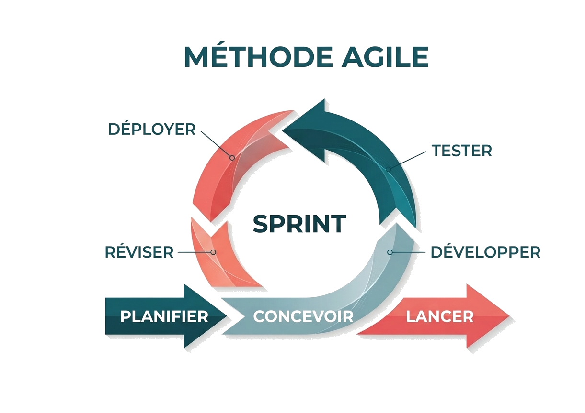

Methodologie eprouvee - du diagnostic a la valeur
Une méthodologie en 4 étapes éprouvée, du diagnostic initial au retour sur investissement mesuré
Cartographie de vos donnees, identification des lacunes et opportunites d'amelioration
Avant de transformer vos donnees, il faut d'abord les comprendre. Notre audit vous offre une vision claire et objective de votre situation actuelle : ou sont vos donnees, comment elles circulent, et surtout, quelles opportunites concretes s'offrent a vous.
Nous commençons par photographier votre realite data : sources, flux, volumes. Pas de jargon, juste une carte claire.
Nous detectons les points de friction : doublons, donnees obsoletes, risques RGPD. Chaque lacune devient une opportunite.
Exit les rapports inutiles. Un plan concret avec roadmap 12 mois et budget réaliste. Vous savez par où commencer.
Conception du référentiel MDM adapté à vos enjeux et votre environnement technique
Un référentiel MDM efficace ne sort pas d'un catalogue tout fait. Il doit épouser vos processus métier, s'intégrer à votre infrastructure existante, et pouvoir grandir avec vous. Notre approche : concevoir une architecture qui répond à vos enjeux d'aujourd'hui sans vous enfermer dans les contraintes de demain.
Nous définissons le périmètre (clients, produits...) et choisissons la stack pertinente (Informatica, custom, cloud native) selon vos contraintes.
Conception des liens avec vos ERP/CRM. On tranche entre flux temps réel ou batch et on intègre la sécurité dès le départ.
On livre des schémas clairs et actionnables pour vos dév. Un MDM pensé pour évoluer sans refonte complète tous les 3 ans.
Déploiement agile par sprints, intégration avec vos systèmes et tests continus
Fini les tunnels de développement de 18 mois où vous découvrez le résultat final avec surprise. Nous travaillons en mode agile : des sprints courts, des livrables concrets toutes les 2-3 semaines, et votre validation à chaque étape.
Chaque itération livre une brique fonctionnelle testable immédiatement. On pivote dès le prochain sprint si vos priorités changent.
Nous automatisons et sécurisons les flux vers vos outils actuels. La migration se fait progressivement, sans impacter votre production.
Un bug détecté en sprint 3 se corrige en 48h. Nous validons tout avec vos utilisateurs clés avant de généraliser.
KPIs qualité, reporting ROI, amélioration continue et montée en compétence
L'implémentation n'est que le début. Nous ne nous contentons pas de livrer un outil : nous mesurons l'impact réel sur votre business. Chaque euro investi dans votre MDM doit rapporter.
Finie la navigation à vue. Nos indicateurs prouvent la valeur du projet au quotidien auprès de vos métiers.
Le transfert de compétences est dans notre ADN. Nous formons vos équipes pour une autonomie totale.
Nous co-calculons les gains réels (temps, budget, productivité). Notre succès est votre réussite financière.
Définition des objectifs et priorisation des tâches pour le prochain cycle.
Architecture technique sur mesure et conception fonctionnelle de la solution.
Initialisation de l'environnement et préparation des flux de données.
Construction itérative des fonctionnalités et des connecteurs spécialisés.

Validation continue de la qualité, de la sécurité et de la conformité métier.
Mise en production sécurisée du bloc logiciel validé.
Analyse des résultats et intégration immédiate des retours utilisateurs.
Cycle court de 2–3 semaines permettant la livraison de valeur concrète.
Approche orientée cas d'usage métier
Architecture modulaire et évolutive
Mesure systématique de la qualité données
Intégration native cloud & on-premise
Gouvernance transparente et documentée
Livraison agile par sprints de valeur